Task
UX Design, Product Design, User Research
Date
Category
UX
Project Description
A grocery delivery service with public transport and other ride services.

Sprint 1 Problem/Value Opportunity
Ideation Process
STAGE 1: team brainstormed individually using post it notes
STAGE 2: each person presents ideas and sticks to board
STAGE 3: ideas are grouped together in categories
STAGE 4: categories identified with a “tag”
User Interviews
We combined the following map with interviews to help interviewees to find possible problems
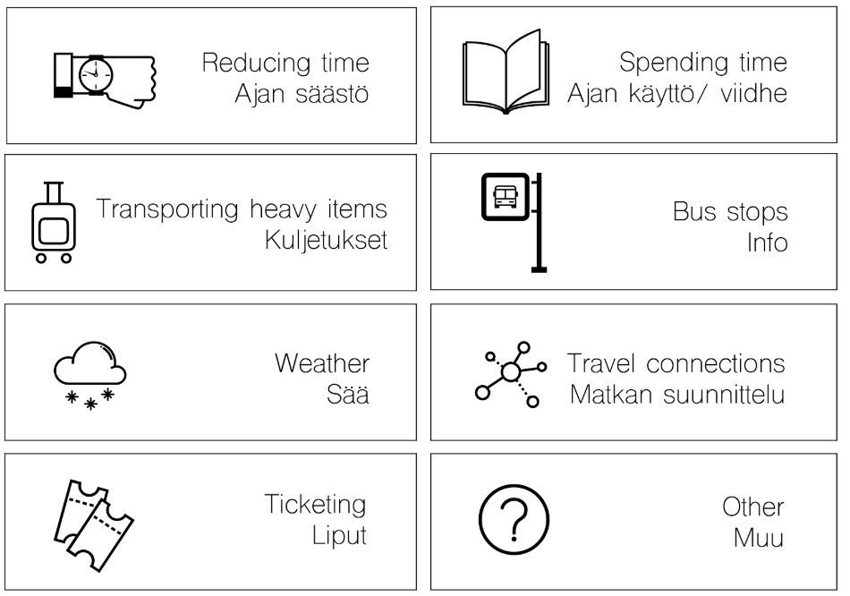Here is the interview results:
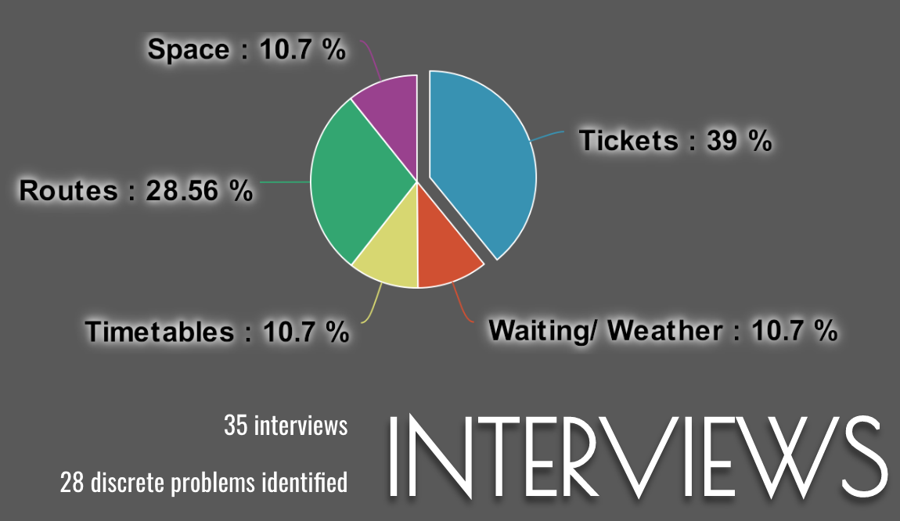We categorized the problems we identified into 4 kinds
1. NOT ENOUGH INFORMATION ABOUT TICKETING
2: WAITING IN BAD WEATHER
3: UNCLEAR BUS STOPS
4: BABY PRAM/ LUGGAGE TRANSPORT
Sprint 2 User groups, challenges and potential
After feedback we realized that all of these are mostly issues for people who already use public transport. Instead, we wanted to look into how we could increase ridership numbers and how we could get new customers to public transport
Therefore, we identified two potential user groups
First time travellers from airport
Car users in Espoo who are interested in using public transport
In order to obtain more qualitative data, we did 4 depth interviews with car users and 16 interviews with airport travellers
We found that both user groups had concrete problems but they are very different. Both user groups needed to solve convenience.
Sprint 3 Initial Ideas
In this sprint, we aimed to identify initial solution ideas for our user group. In order for refinement, we decide to focus on car users who are interested in using public transport. We further explored their needs and problems and did iterative ideation.
Our users are people who are actively interested in using public transport but don't use public transport. People have a lot of issues but we identified two factors we decided to focus on: Getting to the stop closest to your home is pain, Getting to transport hub is pain. Following the ideas, in the end we came up with something like 80 ideas and categorized into 5 types.
1. Use travel time more efficiently
2. Easier travel to closest station to home
3. Move stations closer to homes
4. Make public transport cheaper
5. Gamify public transport
Sprint 4 Concept candidates
We defined 4 concept candidates: Services in public transport, Ridesharing to travel hubs, Dynamic bus routes, Better city bikes
We did material research on these concepts and conducted questionaires about commuting with car. We received 35 answers in total and found that the most important reason for using car is that it offers flexibility and speed. And car is also used to reach hobbies and go groceries.
Our next steps will be: Interview specialists about the solutions, Develop the best solutions further with help of possible users
Sprint 5 Business Ecosystem, Revenue
According to results of survey, most people said it's quicker to use cars. Therefore, we decided to narrowed down our ideas to focus on the ones which concentrate most on time-saving
Two ideas arised:
Dynamic bus routes ordered the day before
Delivering groceries to cars waiting in park-n-rides
In order to get insights, we researched on existing business models with industry expert interviews. Target users of kutsuplus were extremely similar to those we surveyed, largely male, between 30-44. More than half had cars already. Multi-sided platform like Didi where drivers are trained and get additional income and users can get a taxi ride for a cheaper price, quite successful. Most of the additional revenue streams, not just charge fee but surge pricing and premium cars which didn’t really take off
But the barriers were: Pricing, Integration with other services, Regulation
For grocery delivery, Shipt could be looked into. We also did competitor analysis of supermarkets that provides delivery service.
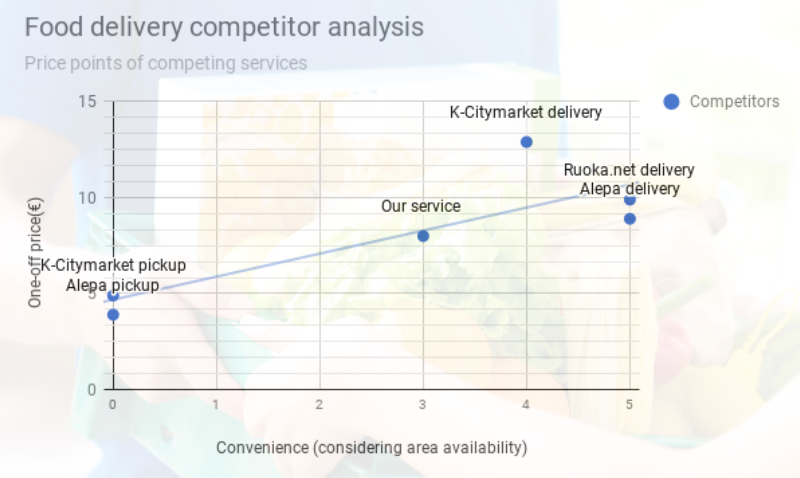Sprint 6 Prototyping and Validation Plan
We refined our concept: Deliver Groceries and ready-made grocery bags to customers.
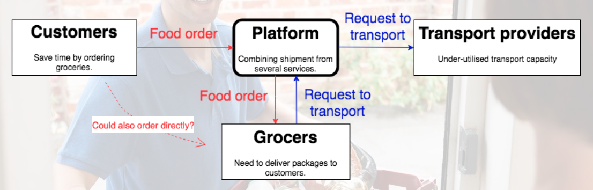Value proposition could focus on 3 aspects: Customers, Transport Providers, Grocery Bag Service
Customer: uncertainty of time/ expensive. The service could offeraccurate estimates / for pickup customers can decide a convenient location. Transport providers: Excess capacity. We provide a platform that works with several services and allows the transport to simply subscribe and start delivering. Grocery bag service: deliver grocery not core competence. Only a few people who want groceries from a specific place live next to each other. Typical courier services are expensive. Postal service is cheap but unable to fulfil requirements.Solution could be outsource delivery to us. We gather and deliver everything together with deliveries from other companies going to nearby addresses.
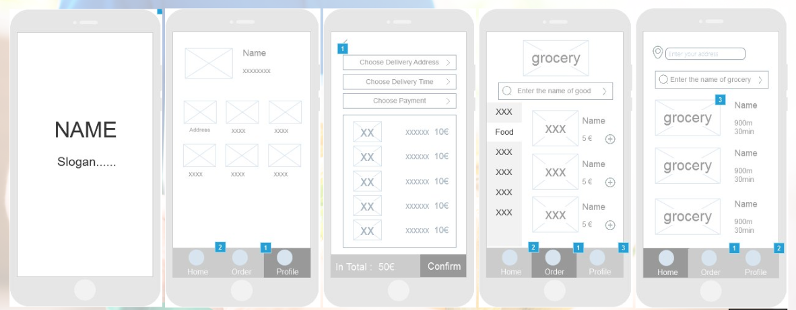Sprint 7 Alpha Prototyping
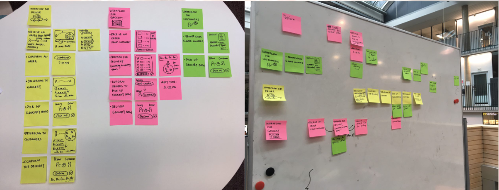 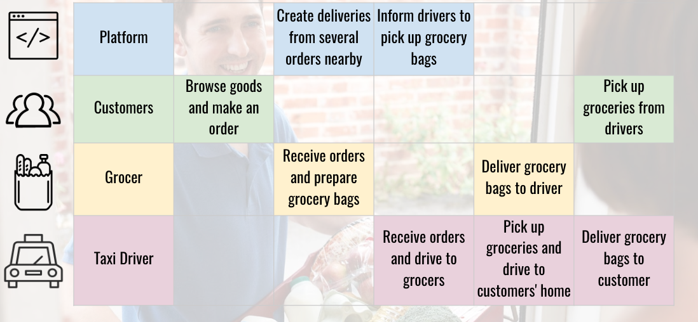platform: We would provide a platform that works with several services, gathers nearby grocery orders together and allows the drivers to deliver them to customers sequently. Customer: there is accurate time estimates for pick up and customers can decide a convenient location. Grocer: internal employees will collect groceries from order lists, and prepare grocery bags for drivers to pick up. Taxi driver:they could deliver several groceries at one time when these is empty capacity on taxis.
We developed the mockups of our platform that targets to the customer. Our alpha prototype illustrates the flow of how the customer order groceries from stores and locations of drivers at different stages from driving to stores, pick up groceries and deliver to customers’ addresses.
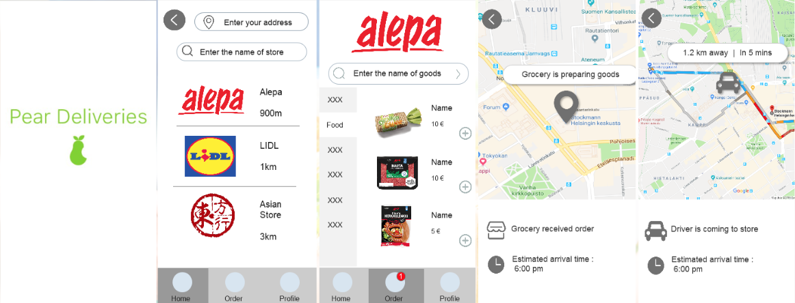 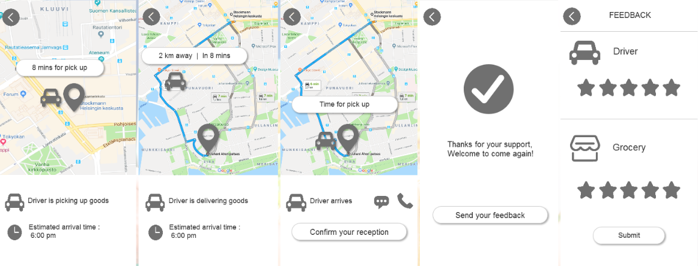Sprint 8 Beta Prototyping
Platform is for ordering grocery items directly to customers’ home. At this stage, we focus on providing door-to-door delivery service for families. Groceries will be provided by existing providers, both chain stores and independent stores especially which do not have delivery services. The items would be extendable to medicine, flowers and other items, not limited in groceries. we will target at some specialty stores. The transport providers for our concepts mainly come from taxi drivers in order to minimise the amount of empty cars driving and deliver lots of groceries at one time. In the future, transport providers could be extendable to private drivers, ride sharing providers, such as MOIA and Kytti and other services from HSL
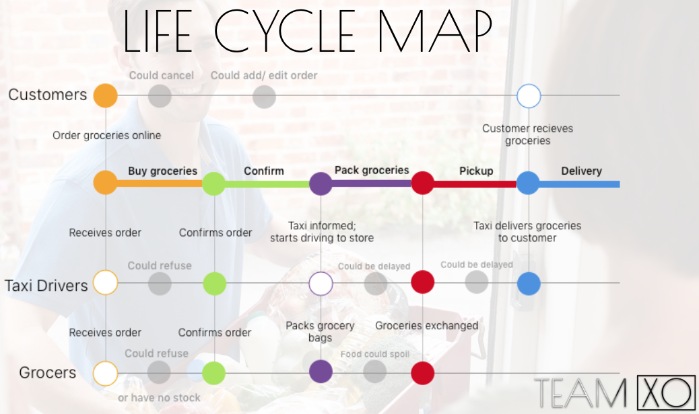In order to validate our prototype, we conducted deep interviews with grocers, taxi drivers and customers.
For grocers, they are willing to cooperate, but worried about price and insurance.
For taxi drivers, they are possible to work but need to deal with companies
By usability testing with customers, they suggested to add brandings, delivery fees and address and reviews of store.
Final Prototype
Concept: Grocery delivery is expensive and complex for the user. There is much unused transport capacity in Taxis and other on-demand transport. We provide app for consumers to order groceries, connecting needed deliveries via transport providers.
There has been lot of talk about getting groceries online. Only really well known brand for online groceries is Alepa kauppakassi also Anton&Anton does deliveries. 72 % growth last year in online shops.
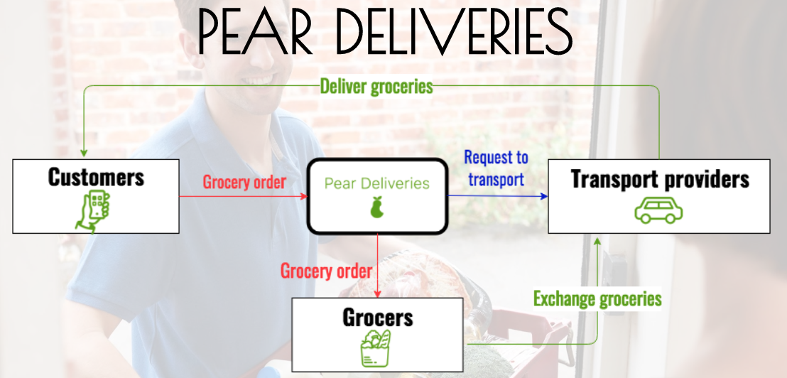Platform is for ordering grocery items directly to customers’ home. we focus on providing door-to-door delivery service for customers,they could get readily packed bags which contain certain items. Groceries will be provided by existing providers, both chain stores and independent stores especially which do not have delivery services. For this to work with taxis we need to make deals with large taxi companies. As taxis have to do all deliveries by the meter which is very expensive.
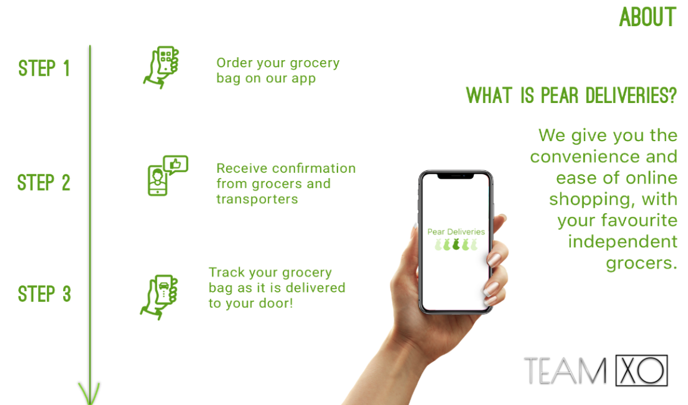We conducted prototype testing in two methods: customer interviews and delivery testing. For customer interviews, half would like food for week and half would like bags with interesting meals. 5 euros is cheap and 10 is too much so between that would be ideal. These were students who work so maybe some people with more money would be willing to pay more. But 5 - 10€ is same as the competitors. Customers want to know exactly what is in the bags. For delivery prototype, packing takes too long around 20 minutes at rush hour it’s not feasible. Taxis are too expensive compared to own driver as the graph shows. Taxis cost 1,55€/km and have 7€ starting price. One delivery takes around 25 minutes.
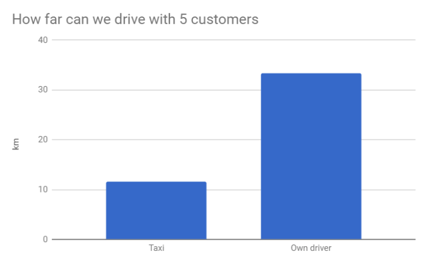This graph illustrates the calculations we have done based on our own functional prototyping, when we tested the process of picking up grocery bags and delivering to 5 different locations, considering the customer is willing to pay €5 per delivery. This takes into account different costs such as the taxi starting meter, and taxi fee per km, compared to how much it would be for our own driver’s wages (€17/ hour), fuel and so on. Overall, having our own driver will be three times cheaper per km, however, the taxi will start billing when it picks up the goods compared to driver who starts from last customer - so it balances out.